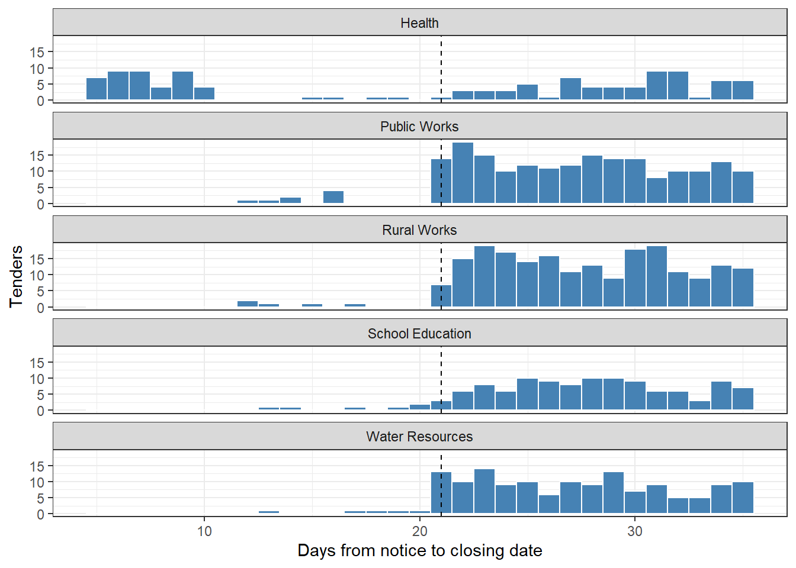
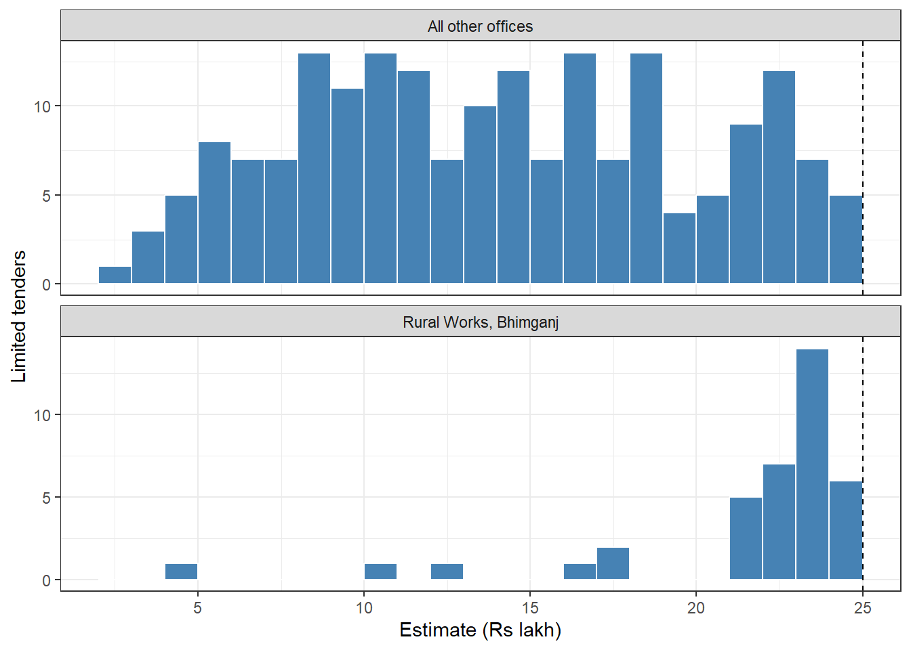

61 Red Flags in Tendering
The Health department of an imaginary State builds and repairs hospitals, health centres and staff quarters. Its divisions let about fifty works tenders a year. In each file the auditor finds a notice, a comparative statement, an approval and an agreement. Each file looks in order. Yet the department’s contracts keep going to the same two firms. Many tenders received only one bid. Some notices gave bidders barely a week to respond. Was competition really open?
Questions like this are not about bidders quietly agreeing among themselves. They are about the tendering process. Who decided the procedure? Was the notice published? Was there enough time to bid? Did the scoring leave room for judgement? Did the price change after the award? A buyer who wishes to favour a chosen firm can restrict competition through any of these steps. Each step leaves a trace in the tender data, and each trace can be checked for every tender, however few bids it received.
This chapter is the first of three on tenders. It turns these traces into red flags, one rule for each step. It then combines them into a simple corruption risk index for each tender, department and firm. The next chapter, Chapter 62, looks for bidders acting together across many tenders. The one after it, Chapter 63, studies the shape of the bids within larger tenders and adds machine learning.
A red flag is not a finding. Many flagged tenders will have good reasons on file. The aim is to rank tenders by risk, so that the auditor reads the right files first.
This chapter uses tidyverse. If it is missing, install it with the command below. Section C.2 lists the packages of every part.
install.packages(c("tidyverse"))Prerequisites
61.1 Red flags in the tendering process
Mihály Fazekas and his colleagues have studied this problem with very large procurement datasets. In one well known study, Fazekas and Kocsis (2020) used about 2.8 million contracts from 28 European countries, awarded from 2009 to 2014.1 They define corruption in procurement as the unjustified restriction of access to contracts, to favour a chosen bidder. Such restriction cannot be seen directly. So they use two proxies.
- Single bidding in competitive markets. A tender that attracts only one bid, where many firms could have bid, is the plainest sign that access was restricted.
- A composite score of red flags, which they call the corruption risk index (CRI). It counts how many risky features a tender has.
Their red flags include the following.
| Step | Red flag | Why it matters |
|---|---|---|
| Bidding | Only one bid | No competition at all |
| Notice | Call for tenders not published | Other firms could not know of it |
| Notice | A procedure other than open | Fewer firms are allowed to bid |
| Notice | A very short time to submit bids | Only a firm told in advance can prepare |
| Evaluation | A large weight on non-price criteria | Subjective marks can decide the winner |
| Award | An unusually short or long decision period | A rushed award, or a long delay for negotiation |
| Award | The procedure annulled and launched again | A second chance to get the “right” winner |
| Contract | Large modifications and increases in value | A low bid wins, and the price rises later |
| Buyer | The winner’s share of the buyer’s contracts | One firm takes much of the buyer’s work |
Three points from their method matter for auditors. First, a red flag is kept only if it goes together with single bidding in the data. This checks that the flag really points to restricted competition. Second, the weight given to each flag is a judgement, or is estimated from the data. Third, the index ranks risk. It does not prove corruption. The World Bank has applied the approach to the procurement data of several countries, for example Bulgaria in 2023, and an open dataset of such indicators is published.2
61.1.1 The Indian setting
In India, most government tenders are now handled online. Central government tenders appear on the Central Public Procurement Portal (CPPP). The States run their own e-procurement portals. Goods and many common services are bought through the Government e-Marketplace (GeM). The General Financial Rules of the Government of India, and the financial rules of the States, set out when an open tender is needed, when a limited or single tender may be used, and how long bidders must be given. They also require tenders to be published on the portal. The exact limits differ between governments and change over time.
So this chapter uses example norms, such as “open tenders stay open at least 21 days”. The auditor must replace each one with the norm that governs the auditee. The OECD guidelines on bid rigging also list “too few bids where the market is large” as a warning sign. This is single bidding in a competitive market, seen from the other side.
61.2 Our data, three years of tenders in five departments
We have the works tenders of five departments of an imaginary State for 2022-23 to 2024-25. The departments are Public Works, Water Resources, Rural Works, Health and School Education. They work in five made-up districts, Amarpur, Bhimganj, Chandpur, Devnagar and Girinagar. Girinagar is a hilly, remote district with few contractors. The firms are made up too. C01 to C60 are general contractors, twelve based in each district. C61 to C65 build bridges. C65 is the only bridge firm that works regularly in Girinagar.
The table tenders has one row per tender, with these columns.
-
tender_id,fy,department,districtandwork_type(Road, Building, Bridge, Water works or Repairs). -
procedure. Open, Limited (invitation to selected firms), Single source, or Nomination. -
published, whether the notice appeared on the e-procurement portal. -
publish_dateandclosing_date, the date of the notice and the last date for bids. -
estimate_lakh, the estimated cost in ₹ lakh. -
evaluation. “L1 price” when the lowest price wins, or “Quality and cost” when marks for quality count too.nonprice_weightis the weight of the quality marks, in per cent. -
n_bids, the number of bids received, andwinner, the firm awarded the contract. -
award_dateandaward_lakh, the date and value of the award. -
retendered, TRUE when an earlier call for the same work was cancelled and the work was tendered again.first_call_l1is the lowest bidder in that cancelled call. -
final_lakh, the value of the contract after all variations.
Genuine tenders behave as they do in real life. Fewer firms bid in Girinagar, for bridges, for limited tenders and when the time to bid is short. More bids bring lower prices. Some contracts grow for genuine reasons. Five cases have been planted.
- From 2023-24, the Health department gives many tenders a very short time for bids, awards them within days, and often uses heavy quality marks. Most of these tenders receive one bid, and two firms,
C07andC19, win them. - The Rural Works division in Bhimganj splits road works into groups of limited tenders, each just below the open-tender limit of ₹25 lakh.
- One firm,
C12, wins a large share of the water works of Water Resources. - One firm,
C23, wins Public Works contracts well below the estimate, and their value is then raised by large variations. - School Education often cancels a call and tenders again. In the second call,
C31wins, though another firm was lowest in the first.
Code to create the tender data
set.seed(2526)
depts <- c("Public Works", "Water Resources", "Rural Works", "Health", "School Education")
districts <- c("Amarpur", "Bhimganj", "Chandpur", "Devnagar", "Girinagar")
work_mix <- list(
"Public Works" = c(Road = 0.45, Building = 0.30, Bridge = 0.10, Repairs = 0.15),
"Water Resources" = c("Water works" = 0.75, Bridge = 0.10, Repairs = 0.15),
"Rural Works" = c(Road = 0.70, Bridge = 0.10, Repairs = 0.20),
"Health" = c(Building = 0.55, Repairs = 0.30, "Water works" = 0.15),
"School Education" = c(Building = 0.60, Repairs = 0.40)
)
# Firms. Twelve contractors based in each district, and five bridge specialists.
firms <- tibble(firm = sprintf("C%02d", 1:65),
base = c(rep(districts, each = 12), rep("Bridges", 5)),
pull = round(runif(65, 0.5, 2), 2))
firms$pull[firms$firm == "C65"] <- 12 # the one bridge firm working in hilly Girinagar
pick_firm <- function(district, work_type) {
pool <- if (work_type == "Bridge") filter(firms, base == "Bridges") else filter(firms, base == district)
w <- pool$pull
if (work_type == "Bridge" && district != "Girinagar") w[pool$firm == "C65"] <- 0.5
sample(pool$firm, 1, prob = w)
}
n <- 1000
t <- tibble(
department = sample(depts, n, replace = TRUE, prob = c(0.26, 0.20, 0.24, 0.15, 0.15)),
district = sample(districts, n, replace = TRUE, prob = c(0.23, 0.22, 0.22, 0.21, 0.12)),
publish_date = as.Date("2022-04-01") + sample(0:1060, n, replace = TRUE)
) |>
mutate(work_type = map_chr(department, \(d) sample(names(work_mix[[d]]), 1, prob = work_mix[[d]])),
estimate_lakh = round(case_when(
work_type == "Bridge" ~ rlnorm(n(), log(150), 0.5),
work_type == "Repairs" ~ rlnorm(n(), log(9), 0.6),
.default = rlnorm(n(), log(40), 0.7)), 2))
# Example norm. Works of Rs 25 lakh or more go to open tender. Smaller works may use limited tenders.
u <- runif(n)
t <- t |>
mutate(procedure = case_when(
work_type == "Repairs" & u < 0.05 ~ "Nomination",
estimate_lakh < 25 & u < 0.50 ~ "Limited",
estimate_lakh >= 25 & u > 0.97 ~ "Single source",
.default = "Open"),
published = case_when(procedure == "Open" ~ runif(n()) > 0.01,
procedure == "Limited" ~ runif(n()) < 0.90,
.default = FALSE),
short = runif(n()) < 0.06,
days_open = case_when(
procedure == "Open" & !short ~ sample(21:35, n(), replace = TRUE),
procedure == "Open" ~ sample(12:20, n(), replace = TRUE),
procedure == "Limited" & !short ~ sample(14:24, n(), replace = TRUE),
procedure == "Limited" ~ sample(7:13, n(), replace = TRUE),
.default = sample(3:10, n(), replace = TRUE)),
nonprice_weight = if_else(work_type == "Building" & runif(n()) < 0.12,
sample(c(20, 30, 40), n(), replace = TRUE, prob = c(0.45, 0.45, 0.10)), 0),
decision_days = round(rgamma(n(), 4, 4 / 30)) + 3 +
if_else(runif(n()) < 0.04, sample(60:120, n(), replace = TRUE), 0L),
plant = "none")
# Planted 1. From 2023-24 the Health department hurries many tenders through.
# Short windows, quick awards, one or two bids, and two favoured firms.
h <- which(t$department == "Health" & t$district != "Girinagar" & t$publish_date >= as.Date("2023-04-01") &
t$procedure %in% c("Open", "Limited") & runif(n) < 0.65)
t$plant[h] <- "health"
t$days_open[h] <- sample(5:10, length(h), replace = TRUE)
t$decision_days[h] <- sample(2:6, length(h), replace = TRUE)
t$published[h] <- runif(length(h)) > 0.2
q <- h[runif(length(h)) < 0.4]
t$nonprice_weight[q] <- sample(c(50, 60), length(q), replace = TRUE)
# Bids. Fewer bids in hilly Girinagar, for bridges, for limited and unpublished tenders,
# when the window is short, and when much of the score is not price.
t <- t |>
mutate(lam = 2.6 * if_else(district == "Girinagar", 0.45, 1) *
case_when(work_type == "Bridge" ~ 0.5, work_type == "Road" ~ 1.2, .default = 1) *
if_else(procedure == "Limited", 0.8, 1) * if_else(published, 1, 0.6) *
if_else(days_open < 14, 0.45, 1) * if_else(nonprice_weight > 30, 0.6, 1),
n_bids = if_else(procedure %in% c("Open", "Limited"), 1L + rpois(n(), lam), 1L),
winner = map2_chr(district, work_type, pick_firm))
t$n_bids[h] <- sample(1:2, length(h), replace = TRUE, prob = c(0.75, 0.25))
t$winner[h] <- sample(c("C07", "C19"), length(h), replace = TRUE)
# Planted 3. C12 wins a large share of the water works of Water Resources
w <- which(t$department == "Water Resources" & t$work_type == "Water works" &
t$district %in% c("Amarpur", "Chandpur", "Devnagar") & runif(n) < 0.55)
t$plant[w] <- "c12"
t$winner[w] <- "C12"
# Planted 5. School Education cancels calls and tenders again, and C31 then wins
r <- which(t$department == "School Education" & t$procedure == "Open" & t$plant == "none" & runif(n) < 0.17)
t$plant[r] <- "retender"
t$winner[r] <- "C31"
# Award price. More bids, lower prices.
t <- t |>
mutate(award_lakh = round(estimate_lakh * (1.03 - 0.03 * pmin(n_bids - 1, 5) + rnorm(n(), 0, 0.04)), 2),
retendered = runif(n()) < 0.05 | plant == "retender",
first_call_l1 = case_when(
!retendered ~ NA_character_,
plant == "retender" ~ map2_chr(district, work_type, pick_firm),
runif(n()) < 0.5 ~ winner,
.default = map2_chr(district, work_type, pick_firm)),
u2 = runif(n()),
variation = case_when(u2 < 0.60 ~ 0,
u2 < 0.97 ~ rnorm(n(), 0.06, 0.06),
.default = runif(n(), 0.25, 0.45)))
t$award_lakh[h] <- round(t$estimate_lakh[h] * runif(length(h), 1.00, 1.08), 2)
t$award_lakh[w] <- round(t$award_lakh[w] * 1.04, 2)
# Planted 4. C23 wins Public Works contracts low, and the value is raised later
p <- which(t$department == "Public Works" & t$work_type %in% c("Road", "Building") &
t$district %in% c("Amarpur", "Bhimganj") & t$procedure == "Open" & runif(n) < 0.22)
t$winner[p] <- "C23"
t$n_bids[p] <- pmax(t$n_bids[p], 3L)
t$award_lakh[p] <- round(t$estimate_lakh[p] * runif(length(p), 0.78, 0.86), 2)
t$variation[p] <- runif(length(p), 0.35, 0.65)
t <- t |> mutate(final_lakh = round(award_lakh * (1 + variation), 2))
# Planted 2. Rural Works in Bhimganj splits road works into limited tenders just below Rs 25 lakh
split_start <- as.Date("2023-06-01") + sort(sample(0:600, 9))
splits <- map(seq_along(split_start), \(g) {
k <- sample(3:4, 1)
tibble(department = "Rural Works", district = "Bhimganj", work_type = "Road",
publish_date = split_start[g] + sample(0:2, k, replace = TRUE),
estimate_lakh = round(runif(k, 21.5, 24.95), 2), procedure = "Limited",
published = runif(k) < 0.5, days_open = sample(8:15, k, replace = TRUE),
nonprice_weight = 0, decision_days = sample(10:30, k, replace = TRUE),
n_bids = sample(1:3, k, replace = TRUE, prob = c(0.5, 0.35, 0.15)),
winner = sample(c("C15", "C15", "C20", "C22"), k, replace = TRUE),
retendered = FALSE, first_call_l1 = NA_character_) |>
mutate(award_lakh = round(estimate_lakh * runif(k, 0.99, 1.04), 2),
final_lakh = round(award_lakh * (1 + if_else(runif(k) < 0.6, 0, runif(k, 0, 0.08))), 2))
}) |>
list_rbind()
tenders <- bind_rows(t, splits) |>
mutate(closing_date = publish_date + days_open,
award_date = closing_date + decision_days,
evaluation = if_else(nonprice_weight > 0, "Quality and cost", "L1 price"),
fy = if_else(month(publish_date) >= 4,
paste0(year(publish_date), "-", year(publish_date) %% 100 + 1),
paste0(year(publish_date) - 1, "-", year(publish_date) %% 100))) |>
arrange(publish_date) |>
mutate(tender_id = sprintf("TN-%04d", row_number())) |>
select(tender_id, fy, department, district, work_type, procedure, published,
publish_date, closing_date, estimate_lakh, evaluation, nonprice_weight,
n_bids, winner, award_date, award_lakh, retendered, first_call_l1, final_lakh)
# Keep only the table that the auditor receives
rm(list = setdiff(ls(), "tenders"))Let us look at the data.
glimpse(tenders)Rows: 1,032
Columns: 19
$ tender_id <chr> "TN-0001", "TN-0002", "TN-0003", "TN-0004", "TN-0005",…
$ fy <chr> "2022-23", "2022-23", "2022-23", "2022-23", "2022-23",…
$ department <chr> "Rural Works", "Water Resources", "Water Resources", "…
$ district <chr> "Devnagar", "Amarpur", "Amarpur", "Devnagar", "Devnaga…
$ work_type <chr> "Road", "Water works", "Water works", "Bridge", "Road"…
$ procedure <chr> "Open", "Open", "Open", "Open", "Limited", "Open", "Op…
$ published <lgl> TRUE, TRUE, TRUE, TRUE, TRUE, TRUE, TRUE, FALSE, TRUE,…
$ publish_date <date> 2022-04-01, 2022-04-01, 2022-04-02, 2022-04-02, 2022-…
$ closing_date <date> 2022-05-06, 2022-04-30, 2022-05-07, 2022-05-03, 2022-…
$ estimate_lakh <dbl> 33.45, 52.96, 36.95, 348.92, 11.87, 25.13, 42.47, 34.4…
$ evaluation <chr> "L1 price", "L1 price", "L1 price", "L1 price", "L1 pr…
$ nonprice_weight <dbl> 0, 0, 0, 0, 0, 0, 0, 0, 20, 0, 0, 0, 0, 0, 0, 0, 0, 0,…
$ n_bids <int> 6, 1, 3, 4, 4, 2, 4, 1, 2, 4, 2, 6, 2, 1, 1, 3, 3, 2, …
$ winner <chr> "C46", "C12", "C12", "C62", "C47", "C53", "C34", "C12"…
$ award_date <date> 2022-06-10, 2022-06-03, 2022-06-25, 2022-05-30, 2022-…
$ award_lakh <dbl> 29.23, 56.73, 38.79, 335.98, 11.24, 25.47, 39.83, 35.4…
$ retendered <lgl> FALSE, FALSE, FALSE, FALSE, FALSE, FALSE, FALSE, FALSE…
$ first_call_l1 <chr> NA, NA, NA, NA, NA, NA, NA, NA, "C46", NA, NA, NA, NA,…
$ final_lakh <dbl> 30.47, 57.62, 38.79, 335.98, 11.24, 25.47, 40.39, 38.1…There are 1,032 tenders, worth ₹493.6 crore at award, won by 65 firms. Here is how they are spread across departments and years.
tenders |>
count(department, fy) |>
pivot_wider(names_from = fy, values_from = n)# A tibble: 5 × 4
department `2022-23` `2023-24` `2024-25`
<chr> <int> <int> <int>
1 Health 38 63 47
2 Public Works 80 71 83
3 Rural Works 87 113 99
4 School Education 56 49 50
5 Water Resources 63 75 58Before we start, let us add three columns that several flags need. Subtracting one date from another gives a number of days.
tenders <- tenders |>
mutate(days_open = as.numeric(closing_date - publish_date),
decision_days = as.numeric(award_date - closing_date),
variation_pct = round(100 * (final_lakh / award_lakh - 1), 1))days_open is the time bidders had, from the notice to the closing date. decision_days is the time from the closing date to the award. variation_pct is how far the final value of the contract rose above the award, in per cent.
61.3 Flags from the notice
The first flags come from the notice inviting tenders. They are known before a single bid arrives.
61.3.1 The procedure
An open tender lets any qualified firm bid. A limited tender invites only selected firms. A single source or nomination contract goes to one firm without competition. The rules allow each of these in proper cases. Limited tenders are common for small works, and nomination may be justified in a real emergency. So a non-open procedure is a flag, not a fault. Let us see how often each department used each procedure.
tenders |>
count(department, procedure) |>
pivot_wider(names_from = procedure, values_from = n, values_fill = 0)# A tibble: 5 × 5
department Limited Nomination Open `Single source`
<chr> <int> <int> <int> <int>
1 Health 34 1 112 1
2 Public Works 34 1 195 4
3 Rural Works 80 3 208 8
4 School Education 36 1 116 2
5 Water Resources 45 4 144 3Rural Works used non-open procedures the most, in 30% of its tenders. This may simply reflect many small road and repair works. We will look closer in Section 61.5.
61.3.2 Publication on the portal
A tender that was never published could not be seen by most firms. For open and limited tenders, publication on the portal is expected. For single source and nomination it is not, so we leave them out of this flag. This is our first use of a rule that applies only to some tenders.
# A tibble: 5 × 4
department tenders not_published share
<chr> <int> <int> <dbl>
1 Rural Works 288 26 0.09
2 Water Resources 189 4 0.021
3 Public Works 229 2 0.009
4 School Education 152 7 0.046
5 Health 146 16 0.11 Most unpublished tenders are limited tenders, where the invitation goes to a few firms. That makes them easy to give to a chosen firm. The Health department is a little higher than the rest. The question to ask in each case is simple. Who was invited, and why only these firms?
61.3.3 Time to bid
A short time to bid favours the firm that knew about the work in advance. In our example State, the department’s own norm is at least 21 days for an open tender and at least 14 days for a limited tender. Let us first try the rule on three made-up tenders. case_when() lets us apply a different limit to each procedure.
# A tibble: 3 × 3
procedure days_open short
<chr> <dbl> <lgl>
1 Open 18 TRUE
2 Limited 18 FALSE
3 Nomination 4 NA The same 18 days is short for an open tender and enough for a limited one. For nomination the flag is NA, which means “does not apply”. Now for all tenders.
norm_open <- 21
norm_limited <- 14
tenders <- tenders |>
mutate(short = case_when(procedure == "Open" ~ days_open < norm_open,
procedure == "Limited" ~ days_open < norm_limited,
.default = NA))
tenders |>
filter(procedure %in% competitive) |>
summarise(share_short = round(mean(short), 2), .by = c(department, fy)) |>
pivot_wider(names_from = fy, values_from = share_short)# A tibble: 5 × 4
department `2022-23` `2023-24` `2024-25`
<chr> <dbl> <dbl> <dbl>
1 Rural Works 0.02 0.16 0.12
2 Water Resources 0.03 0.01 0.04
3 Public Works 0.05 0.07 0.06
4 School Education 0.05 0.02 0.08
5 Health 0.03 0.54 0.55In 2022-23 the Health department gave a short window in 3% of its tenders, much like the others. By 2024-25 the share was 55%. The highest share in any other department was 16%, in Rural Works in 2023-24. Part of that comes from the split works we meet in Section 61.5. Figure 61.1 shows the days given to bidders in open tenders.
tenders |>
filter(procedure == "Open") |>
ggplot(aes(days_open)) +
geom_histogram(binwidth = 1, fill = "steelblue", colour = "white") +
geom_vline(xintercept = norm_open, linetype = "dashed") +
facet_wrap(~department, ncol = 1) +
labs(x = "Days from notice to closing date", y = "Tenders") +
theme_bw()
Whether each tender was open long enough can also be checked against the portal itself, as in Section 13.8, which scrapes the dates from the portal pages.
61.3.4 Weight of quality marks
When the lowest price wins, the decision is objective. When marks for quality also count, the evaluation committee has room for judgement. A large weight on such marks can decide the winner. We flag tenders where the non-price weight is above 30 per cent. This cut-off is again an example.
tenders |>
filter(evaluation == "Quality and cost") |>
count(department, nonprice_weight) |>
pivot_wider(names_from = nonprice_weight, values_from = n, values_fill = 0,
names_prefix = "weight_")# A tibble: 3 × 6
department weight_20 weight_30 weight_50 weight_60 weight_40
<chr> <int> <int> <int> <int> <int>
1 Health 2 7 16 15 0
2 Public Works 4 3 0 0 1
3 School Education 6 2 0 0 0Other departments used quality and cost evaluation now and then for buildings, mostly with weights of 20 or 30 per cent. Only Health used weights of 50 and 60 per cent. With such weights, a bidder quoting a higher price can still win comfortably on marks.
61.4 Single bidding where competition was possible
A single bid is the clearest sign that competition failed. But it is not always a sign of wrongdoing. In a remote district, or for a specialised work, there may be only one capable firm. Fazekas and colleagues therefore look at single bidding in markets where competition is possible. The auditor must do the same. Let us start with the share of single-bid tenders, among open and limited tenders, in each department.
# A tibble: 5 × 4
department tenders single share
<chr> <int> <int> <dbl>
1 Rural Works 288 53 0.18
2 Water Resources 189 31 0.16
3 Public Works 229 34 0.15
4 School Education 152 21 0.14
5 Health 146 62 0.42Health stands out, with 42% single bids, against 14 to 18% elsewhere. But perhaps Health tenders are of a kind that attracts few bidders anyway? Let us see which markets are thin. Here is the share of single bids by district and type of work.
comp |>
summarise(share_single = round(mean(n_bids == 1), 2), .by = c(district, work_type)) |>
pivot_wider(names_from = work_type, values_from = share_single)# A tibble: 5 × 6
district Road `Water works` Bridge Building Repairs
<chr> <dbl> <dbl> <dbl> <dbl> <dbl>
1 Devnagar 0.05 0.06 0.35 0.26 0.24
2 Amarpur 0.04 0.14 0.45 0.21 0.18
3 Girinagar 0.21 0.32 0.67 0.23 0.38
4 Chandpur 0.08 0.18 0.62 0.22 0.16
5 Bhimganj 0.31 0.16 0.43 0.15 0.21Bridges get single bids often in every district, because few firms build them. Girinagar has more single bids than the plains districts for most kinds of work. In Girinagar, 6 of its 9 bridge tenders got one bid. These single bids are innocent. They reflect a thin market, not a restricted one.
61.4.1 Comparing with similar tenders
A fair test compares each tender with similar tenders. We take “similar” to mean the same type of work in the same district, whatever the department. For each tender, the share of single bids among such tenders is the chance that a tender like it gets a single bid. Adding these chances over a department’s tenders gives the number of single bids we would expect. We then compare it with the number we observe.
single_check <- comp |>
mutate(expected_chance = mean(n_bids == 1), .by = c(district, work_type)) |>
summarise(tenders = n(),
observed = sum(n_bids == 1),
expected = round(sum(expected_chance), 1),
.by = department) |>
mutate(ratio = round(observed / expected, 2)) |>
arrange(desc(ratio))
single_check# A tibble: 5 × 5
department tenders observed expected ratio
<chr> <int> <int> <dbl> <dbl>
1 Health 146 62 30.4 2.04
2 Rural Works 288 53 53.6 0.99
3 Water Resources 189 31 37.5 0.83
4 Public Works 229 34 47.1 0.72
5 School Education 152 21 32.4 0.65The Health department received 62 single bids where tenders of the same type in the same districts would lead us to expect about 30.4. That is 2.04 times the expected number. The other departments are at or below what their mix of works would suggest. Health’s single bids cannot be explained by remote districts or specialised works.
Single bidding is not only a sign. It also costs money. In our data, the median award was 103% of the estimate when only one firm bid, and 91% when four or more firms bid. Competition lowers prices, so its absence raises them.
61.5 Splitting below the open-tender limit
In our example State, the department’s own norm says that a work estimated at ₹25 lakh or more must go to open tender. Smaller works may use limited tenders. A division that wishes to avoid an open tender can split one work into parts, each just below the limit. We met the same trick for payments in Chapter 5.
The first sign is bunching. Let us count the limited tenders whose estimate lies between ₹20 lakh and the limit.
# A tibble: 5 × 4
department district limited near_limit
<chr> <chr> <int> <int>
1 Rural Works Bhimganj 38 32
2 Water Resources Amarpur 10 5
3 Rural Works Chandpur 16 5
4 School Education Chandpur 12 3
5 Water Resources Bhimganj 6 3Rural Works in Bhimganj had 32 of its 38 limited tenders between ₹20 lakh and ₹25 lakh. No other office had more than 5. Figure 61.2 shows the bunching.
tenders |>
filter(procedure == "Limited", estimate_lakh < 40) |>
mutate(office = if_else(department == "Rural Works" & district == "Bhimganj",
"Rural Works, Bhimganj", "All other offices")) |>
ggplot(aes(estimate_lakh)) +
geom_histogram(binwidth = 1, boundary = 0, fill = "steelblue", colour = "white") +
geom_vline(xintercept = limit_lakh, linetype = "dashed") +
facet_wrap(~office, ncol = 1, scales = "free_y") +
labs(x = "Estimate (Rs lakh)", y = "Limited tenders") +
theme_bw()
61.5.1 Tenders issued together
Bunching shows a habit. Splitting shows itself more directly when several such tenders, for the same kind of work in the same district, are issued within a few days of each other. To find these groups, we sort the tenders by date within each office and type of work. A new group starts whenever more than 3 days pass since the previous tender. cumsum() numbers the groups, because it adds 1 every time a new group starts.
batches <- tenders |>
filter(procedure == "Limited", estimate_lakh < limit_lakh) |>
arrange(department, district, work_type, publish_date) |>
mutate(gap = as.numeric(publish_date - lag(publish_date)),
batch = cumsum(is.na(gap) | gap > 3),
.by = c(department, district, work_type)) |>
summarise(tenders = n(), first_date = min(publish_date),
total_lakh = sum(estimate_lakh), winners = paste(unique(winner), collapse = " "),
.by = c(department, district, work_type, batch)) |>
filter(tenders >= 3, total_lakh >= limit_lakh)
batches# A tibble: 8 × 8
department district work_type batch tenders first_date total_lakh winners
<chr> <chr> <chr> <int> <int> <date> <dbl> <chr>
1 Rural Works Bhimganj Road 4 6 2023-08-17 140. C15 C22
2 Rural Works Bhimganj Road 5 4 2024-01-14 92.1 C20 C15 C22
3 Rural Works Bhimganj Road 6 4 2024-01-30 90.7 C15 C22 C20
4 Rural Works Bhimganj Road 7 3 2024-02-06 69 C15 C20
5 Rural Works Bhimganj Road 9 4 2024-04-13 94.5 C15 C22 C20
6 Rural Works Bhimganj Road 10 3 2024-06-21 70.6 C15
7 Rural Works Bhimganj Road 11 4 2024-08-26 92.5 C15
8 Rural Works Bhimganj Road 12 4 2024-10-19 94.4 C15 C20 8 groups of three or more limited tenders were issued within days of each other, together worth ₹25 lakh or more. All 8 belong to Rural Works in Bhimganj. They hold 32 tenders worth ₹743.7 lakh at estimate. C15 appears among the winners of most of them.
Several small works issued together are not always one work split up. A division may genuinely repair five different village roads in the same week. The files decide. Do the works lie on the same road, one after another? Was there one administrative approval for the whole, later divided? Was the technical sanction split on the same day? The data can only point to the groups worth reading.
61.7 After the award
Three more flags come after the bids are opened.
61.7.1 The decision period
A very quick award, a day or two after the closing date, leaves no time for a proper evaluation. A very long one may hide negotiation or pressure. We flag awards made within 7 days or after more than 90 days of the closing date.
# A tibble: 5 × 4
department median_days within_7 over_90
<chr> <dbl> <int> <int>
1 Rural Works 29 2 11
2 Water Resources 30.5 0 11
3 Public Works 29 0 10
4 School Education 31 0 4
5 Health 18.5 57 5Long decisions occur in every department, a few each year. Quick ones are another matter. Health made 57 awards within a week of closing. The other four departments together made 2.
61.7.2 Cancelled and tendered again
A call may be cancelled for good reasons, such as too few bids or prices far above the estimate. But cancelling a call in which the “wrong” firm was lowest, and tendering again until the “right” firm wins, is a known way to favour a firm. Let us see, for each department, how often the winner of the second call was a firm other than the lowest bidder of the first.
# A tibble: 5 × 3
department retendered l1_changed
<chr> <int> <int>
1 School Education 29 27
2 Health 7 3
3 Rural Works 14 6
4 Public Works 14 7
5 Water Resources 8 4School Education tendered again 29 times, far more than any other department. Let us see who won those second calls.
# A tibble: 6 × 3
winner l1_changed n
<chr> <lgl> <int>
1 C31 TRUE 24
2 C12 FALSE 1
3 C19 FALSE 1
4 C28 TRUE 1
5 C35 TRUE 1
6 C47 TRUE 1C31 won 24 of the 29 second calls. In every one of them, a different firm had been lowest in the first call. The first call was cancelled, the work was tendered again, and C31 won. The auditor should read the reasons recorded for each cancellation.
61.7.3 Contract variations
A contract may grow because the work grew, or because the design changed after the award. But a firm can also bid low to win, expecting the value to be raised later. We look at variations in detail in Section 61.10. For the index, we flag a contract whose final value is more than 25 per cent above the award.
61.8 A simple corruption risk index
We now have nine flags. Let us put them all in one table, one row per tender and one column per flag. Each flag is TRUE, FALSE, or NA where it does not apply. Flags about competition apply only to open and limited tenders.
flags <- tenders |>
left_join(share_year, by = c("department", "fy", "winner")) |>
mutate(
single = if_else(procedure %in% competitive, n_bids == 1, NA),
non_open = procedure != "Open",
unpublished = if_else(procedure %in% competitive, !published, NA),
heavy_marks = nonprice_weight > 30,
odd_decision = decision_days < 7 | decision_days > 90,
retender = retendered & winner != coalesce(first_call_l1, winner),
variation = variation_pct > 25
) |>
select(tender_id, department, district, winner, award_lakh, single, non_open,
unpublished, short, heavy_marks, odd_decision, retender, variation, big_share)
flags# A tibble: 1,032 × 14
tender_id department district winner award_lakh single non_open unpublished
<chr> <chr> <chr> <chr> <dbl> <lgl> <lgl> <lgl>
1 TN-0001 Rural Works Devnagar C46 29.2 FALSE FALSE FALSE
2 TN-0002 Water Resou… Amarpur C12 56.7 TRUE FALSE FALSE
3 TN-0003 Water Resou… Amarpur C12 38.8 FALSE FALSE FALSE
4 TN-0004 Rural Works Devnagar C62 336. FALSE FALSE FALSE
5 TN-0005 Rural Works Devnagar C47 11.2 FALSE TRUE FALSE
6 TN-0006 Rural Works Girinag… C53 25.5 FALSE FALSE FALSE
7 TN-0007 Public Works Chandpur C34 39.8 FALSE FALSE FALSE
8 TN-0008 Water Resou… Devnagar C12 35.5 NA TRUE NA
9 TN-0009 School Educ… Devnagar C31 45.2 FALSE FALSE FALSE
10 TN-0010 School Educ… Devnagar C37 38.4 FALSE FALSE FALSE
# ℹ 1,022 more rows
# ℹ 6 more variables: short <lgl>, heavy_marks <lgl>, odd_decision <lgl>,
# retender <lgl>, variation <lgl>, big_share <lgl>The flags short and big_share were already made in earlier sections, so we only select them. Notice the flag retender. A tender called again is flagged only when the firm lowest in the first call did not win the second. coalesce() replaces a missing first_call_l1 with the winner, so tenders that were never cancelled get FALSE.
61.8.1 The index for each tender
The simplest index is the share of applicable flags that are raised. A tender with 3 flags raised out of 8 that apply scores 0.375. To compute it, we turn the flag columns into rows with pivot_longer(), and take the mean of each tender’s flags, ignoring those that do not apply.
cri <- flags |>
pivot_longer(single:big_share, names_to = "flag", values_to = "raised") |>
summarise(flags_raised = sum(raised, na.rm = TRUE),
flags_apply = sum(!is.na(raised)),
cri = round(mean(raised, na.rm = TRUE), 3),
.by = c(tender_id, department, district, winner, award_lakh))
cri |>
arrange(desc(cri)) |>
head(8)# A tibble: 8 × 8
tender_id department district winner award_lakh flags_raised flags_apply cri
<chr> <chr> <chr> <chr> <dbl> <int> <int> <dbl>
1 TN-0380 Health Amarpur C07 15.5 6 9 0.667
2 TN-0405 Health Chandpur C19 15.4 6 9 0.667
3 TN-0425 Health Amarpur C19 5.09 6 9 0.667
4 TN-0450 Health Devnagar C19 22.9 6 9 0.667
5 TN-0475 Health Bhimganj C19 15.2 6 9 0.667
6 TN-0556 Health Amarpur C07 4.9 6 9 0.667
7 TN-0572 Health Devnagar C07 14.4 6 9 0.667
8 TN-0636 Health Amarpur C07 4.73 6 9 0.667All 20 of the riskiest tenders belong to Health. 17 of them raise six flags at once. A single bid, a short window, a quick award, heavy quality marks and a winner with a large share often come together.
61.8.2 The index for departments and firms
The same index can be averaged over a department or a firm. Let us also weight by value, so that the index reflects where the money went.
# A tibble: 5 × 4
department tenders mean_cri value_weighted_cri
<chr> <int> <dbl> <dbl>
1 Health 148 0.251 0.243
2 Water Resources 196 0.098 0.084
3 Rural Works 299 0.088 0.065
4 School Education 155 0.086 0.061
5 Public Works 234 0.067 0.072# A tibble: 8 × 4
winner contracts value_lakh mean_cri
<chr> <int> <dbl> <dbl>
1 C07 33 1279. 0.453
2 C19 50 2101. 0.358
3 C15 27 874. 0.243
4 C20 21 738. 0.177
5 C31 37 1272. 0.158
6 C22 18 403. 0.157
7 C50 7 160. 0.143
8 C65 15 3093. 0.141Health has the highest mean index, 0.251, against 0.098 for Water Resources, the next. Among firms with at least five contracts, the top of the list is C07, C19, C15, C20, C31. These are the two Health firms, C15 and C20, two of the three winners of the split works in Bhimganj, and C31. C23 ranks only 11th of the 63 firms, with a mean index of 0.111. 17 of its 22 contracts carry just one flag, a large variation. We return to it in Section 61.10.
61.8.3 Checking the flags against single bidding
How do we know the flags measure anything? Fazekas and colleagues check that each red flag goes together with single bidding. If tenders with a short window get single bids far more often than other tenders, the flag points to restricted competition. Let us run the same check on our competitive tenders, one flag at a time.
flags |>
filter(!is.na(single)) |>
pivot_longer(c(non_open, unpublished, short, heavy_marks, odd_decision,
retender, variation, big_share),
names_to = "flag", values_to = "raised") |>
summarise(single_if_raised = round(mean(single[raised]), 2),
single_if_not = round(mean(single[!raised]), 2),
tenders_raised = sum(raised),
.by = flag) |>
arrange(desc(single_if_raised))# A tibble: 8 × 4
flag single_if_raised single_if_not tenders_raised
<chr> <dbl> <dbl> <int>
1 heavy_marks 0.81 0.18 32
2 short 0.63 0.14 119
3 unpublished 0.62 0.18 55
4 odd_decision 0.57 0.16 99
5 big_share 0.45 0.16 134
6 non_open 0.31 0.17 229
7 retender 0.13 0.2 47
8 variation 0.02 0.21 42The flags from the notice pass the check well. Tenders with a short window got a single bid 63% of the time, against 14% for the rest. Unpublished tenders, heavy quality marks and odd decision periods show the same pattern. Two flags fail. Tenders with large variations had fewer single bids, 2% against 21%. So did tenders called again.
This does not mean those flags are useless. It means they catch a different scheme. A firm that bids low and recovers through variations must beat real competitors to win, so its tenders have several bids. The check tells us what each flag measures. It also warns us against adding up flags that point in different directions without thinking.
- The weights are a judgement. We gave every flag the same weight. Another team may weigh a single bid more than a long decision period. Decide the weights before looking at the results, write them down, and keep them fixed.
- The cut-offs are a judgement too. 21 days, 30 per cent, 25 per cent and 15 per cent are example norms. Use the auditee’s own norms where they exist.
- A high score is not proof. A tender with four flags may have a perfectly good reason for each. The index tells the auditor which files to read first. It never replaces reading them.
-
A low score is not a clean chit. A scheme that leaves no trace in these columns will not show up. The firm
C23scores low, yet its contracts cost far more than they should.
61.9 Audit use case, a department where competition was restricted
The index and the single-bid check both point to the Health department. Let us put together what we know, comparing its tenders from 2023-24 with those of 2022-23.
health <- tenders |>
filter(department == "Health", procedure %in% competitive) |>
mutate(period = if_else(fy == "2022-23", "2022-23", "From 2023-24"))
health |>
summarise(tenders = n(),
single = round(mean(n_bids == 1), 2),
short = round(mean(short), 2),
quick_award = round(mean(decision_days < 7), 2),
won_by_C07_C19 = round(mean(winner %in% c("C07", "C19")), 2),
median_award_to_estimate = round(median(award_lakh / estimate_lakh), 3),
.by = period)# A tibble: 2 × 7
period tenders single short quick_award won_by_C07_C19 median_award_to_esti…¹
<chr> <int> <dbl> <dbl> <dbl> <dbl> <dbl>
1 2022-23 36 0.08 0.03 0 0.03 0.942
2 From 2… 110 0.54 0.55 0.52 0.53 1.02
# ℹ abbreviated name: ¹median_award_to_estimateThe change is sharp. In 2022-23, 8% of Health tenders got a single bid. From 2023-24 the share was 54%. Short windows rose from 3% to 55%. C07 and C19 won 3% of the tenders in 2022-23 and 53% afterwards. The median award moved from 94.2% of the estimate to 102.1%.
What did this cost? Let us take the Health tenders of 2023-24 onwards that C07 or C19 won with a single bid. We compare their award with what similar tenders cost in the other departments. Here similar means the same type of work, in the same district and year, with at least two bids.
benchmark <- tenders |>
filter(department != "Health", procedure %in% competitive, n_bids >= 2) |>
summarise(usual_ratio = median(award_lakh / estimate_lakh), .by = c(district, work_type, fy))
health_cost <- health |>
filter(period != "2022-23", winner %in% c("C07", "C19"), n_bids == 1) |>
left_join(benchmark, by = c("district", "work_type", "fy")) |>
mutate(usual_lakh = estimate_lakh * usual_ratio)
health_cost |>
summarise(tenders = n(), award_lakh = sum(award_lakh),
usual_lakh = round(sum(usual_lakh, na.rm = TRUE), 1),
no_benchmark = sum(is.na(usual_ratio)))# A tibble: 1 × 4
tenders award_lakh usual_lakh no_benchmark
<int> <dbl> <dbl> <int>
1 49 1700. 1567. 0On the 49 tenders with a benchmark, the department paid ₹1,700.4 lakh. At the usual ratio of similar tenders, the same works would have cost about ₹1,567.2 lakh. The difference is about ₹133.2 lakh. This is a rough indicator, not a loss. The benchmark is a median, and the works are similar, not identical. It is reported as the likely cost of the lost competition, with the method stated.
61.9.1 What the auditor does next
- Read the files of the flagged tenders. For each short window, look for the approval of the shorter period, by whom and for what reason. A real emergency should be recorded before the notice, not after.
- Check the portal. Confirm the dates of publication and closing from the portal itself, as in Section 13.8. A notice published late on the portal can make a long window in the register a short one in fact.
- Read the quality marks. For each quality and cost evaluation, see who set the criteria and the weights, and whether the marks of each bidder are supported by documents.
- Ask who could have bid. Use the list of firms that downloaded the tender documents, and the firms that bid for similar works in earlier years. Firms that looked and did not bid may be asked why.
- Look at the two firms. Check their registration, owners and addresses, and any links between them, as in Chapter 62 and Chapter 55.
- Report carefully. State the facts. The share of single bids, the short windows, the quick awards, the two firms’ share of the work, and the rough extra cost. Recommend that the department explain each restriction. Leave conclusions about intent to the competent authority.
61.10 Audit use case, contracts won low and raised later
The index rated C23 low. But one flag kept appearing on its contracts. Let us look at firms with at least five contracts, and compare how low they bid with how much their contracts grew.
firm_var <- tenders |>
summarise(contracts = n(),
award_to_estimate = round(sum(award_lakh) / sum(estimate_lakh), 3),
final_to_estimate = round(sum(final_lakh) / sum(estimate_lakh), 3),
big_variations = sum(variation_pct > 25),
.by = winner) |>
filter(contracts >= 5) |>
arrange(desc(big_variations))
head(firm_var, 6)# A tibble: 6 × 5
winner contracts award_to_estimate final_to_estimate big_variations
<chr> <int> <dbl> <dbl> <int>
1 C23 22 0.848 1.16 17
2 C12 74 0.985 1.01 2
3 C19 50 1.00 1.02 2
4 C57 12 0.99 1.05 2
5 C11 21 0.921 0.961 2
6 C28 24 0.968 1.02 2C23 is unlike every other firm. It won 22 contracts, all in Public Works, at 84.8% of the estimate on the whole. That is low enough to beat several bidders. But 17 of its contracts later grew by more than 25 per cent. In the end, its contracts cost 116.5% of the estimate. No other firm had more than 2 large variations.
Let us list its contracts.
# A tibble: 22 × 9
tender_id fy district work_type n_bids estimate_lakh award_lakh final_lakh
<chr> <chr> <chr> <chr> <int> <dbl> <dbl> <dbl>
1 TN-0816 2024… Amarpur Road 5 51.1 41.8 68.8
2 TN-0233 2022… Bhimganj Road 3 50.9 42.4 69.6
3 TN-0406 2023… Amarpur Building 3 66.6 55.9 89.2
4 TN-0693 2023… Bhimganj Road 4 59.2 50.8 80.2
5 TN-0252 2022… Amarpur Building 5 44.4 35.0 54.5
6 TN-0857 2024… Amarpur Road 4 31.1 25.3 39.0
7 TN-0198 2022… Bhimganj Road 5 49.8 41.8 63.4
8 TN-0926 2024… Bhimganj Building 4 38.6 30.2 45.3
9 TN-0775 2024… Bhimganj Road 4 13.8 11.8 17.4
10 TN-0066 2022… Amarpur Road 3 65.5 51.2 74.7
# ℹ 12 more rows
# ℹ 1 more variable: variation_pct <dbl>Across its contracts, variations added ₹436.9 lakh to the award value. The final cost exceeded the estimates by ₹227.4 lakh. The firm won because it was the lowest. Had the other bidders known that the quantities or items would change so much, the lowest bid might have come from someone else.
This pattern is sometimes called bid low, recover later. In item-rate works, a firm may quote very low rates on items it expects to be reduced, and high rates on items it expects to grow. If the department then increases those items, the firm gains. The pattern needs someone inside the department to make the variations happen, or at least to tell the firm in advance.
61.10.1 What the auditor does next
- Read the variation orders. For each large variation, see what changed, when, who proposed it, and who approved it. Was the change foreseeable when the estimate was made?
- Compare item rates. For item-rate contracts, compare the rates quoted on the items that grew with the rates of other bidders and the Schedule of Rates. Rates far above the others, on exactly the items that later grew, are a strong sign. Chapter 62 compares bills of quantities item by item.
- Re-rank the bidders. Using the comparative statement, work out who would have been lowest if the final quantities had been tendered. If another firm comes out lowest, the cost of the variations to the department can be estimated.
- Check the delegation. Confirm that each variation was approved by an authority with the power to approve it, and that cumulative variations did not cross a limit that needed higher sanction. Rule checks of this kind are set out in Chapter 31.
- Report carefully. Present the pattern across all the firm’s contracts, not one contract at a time, because the pattern is the finding.
The flags in this chapter need data from several places. Ask for these, for every tender of the period, not only for the sample.
- From the e-procurement portal. The notice, the dates of publication and closing, the procedure, the evaluation criteria, the number of bids, the bid opening summary, and any corrigenda. Corrigenda that extend or shorten the window matter.
- From the department. The tender register, cancellation orders with reasons, approvals for limited, single source and nomination procedures, award letters and agreements.
- From the accounts. Variation orders, the final bill, and the total paid on each contract.
The register and the portal must then be matched, tender by tender. A tender in the register but not on the portal is itself a flag. Duplicates and mismatched tender numbers are common at this step, and the methods of Chapter 34 help.
61.11 A suggested workflow
- Build one row per tender, with the procedure, publication, dates, estimate, evaluation, bids, winner, award, cancellation and final value, from the portal and the department’s records.
- Write down the norms that govern the auditee, such as the minimum days for each procedure and the open-tender limit, before computing any flag.
- Compute the flags from the notice. Non-open procedure, not published, short window and heavy quality marks.
- Check single bidding against similar tenders, by type of work and district, so that thin markets are not mistaken for restricted ones.
- Look for splitting, as bunching below the open-tender limit and as groups of small tenders issued together.
- Compute the winner’s share of each department’s contracts, by year, and set aside specialised markets.
- Add the flags after the award. Odd decision periods, calls cancelled when the “wrong” firm was lowest, and large variations.
- Combine the flags in an index, with weights fixed in advance. Rank tenders, departments and firms.
- Check each flag against single bidding, to see what it measures, and look separately at flags that catch other schemes.
- Read the files of the highest-ranked tenders and firms, and report facts, not intentions.
- Red flags in the tendering process work for every tender, even one with a single bid. They need no bidding data beyond the count of bids.
- A single bid matters most where competition was possible. Compare with similar tenders before concluding anything.
- Every flag has innocent cases. Remote districts, specialised works and real emergencies are among them.
- The corruption risk index ranks risk. Its weights and cut-offs are judgements, and must be fixed before the results are seen.
- A flag that goes with single bidding points to restricted competition. A flag that does not may still catch another scheme, such as bidding low and recovering through variations.
- Report patterns and facts. Leave conclusions about corruption to the competent authority.
61.12 Where next
The next chapter, Chapter 62, turns from the buyer to the bidders, and looks for firms that act together across many tenders. Chapter 63 then studies the shape of the bids within larger tenders, and shows how machine learning can combine many screens. Whether tenders were open long enough, checked against the portal itself, is in Section 13.8. Rules such as delegation limits can be written as a rule book, as in Chapter 31. Matching the register with the portal often needs the methods of Chapter 34, and links between favoured firms can be traced as networks in Chapter 55.
61.13 Try it yourself
These exercises use the tables tenders, comp, flags and cri of this chapter. Try each one before you open the solution.
-
Short windows by year. For open tenders only, find the median days given to bidders in each department and year. In which department and year was it lowest?
TipSolution# A tibble: 4 × 3 department fy median_days <chr> <chr> <dbl> 1 Health 2024-25 10 2 Health 2023-24 16 3 Water Resources 2024-25 25.5 4 Public Works 2022-23 26The lowest median was 10 days, in Health in 2024-25. A median below the norm means that more than half the open tenders of that department and year were short.
-
A thin market. For bridge tenders in Girinagar, count the tenders, the single bids and the wins of each firm. Would you flag
C65for its share?TipSolution# A tibble: 1 × 2 tenders single <int> <int> 1 9 6ex_bridge |> count(winner, sort = TRUE)# A tibble: 2 × 2 winner n <chr> <int> 1 C65 8 2 C62 1C65won 8 of the 9 bridge tenders in Girinagar, and 6 of these tenders got one bid. It is the only bridge firm based near the district, so a high share is expected. The auditor would note it, check the files of one or two tenders, and move on. -
A wider gap for splitting. Repeat the search for groups of limited tenders in Section 61.5, but start a new group only when more than 10 days pass. How many groups are found now, and in which offices?
TipSolutionex_batches <- tenders |> filter(procedure == "Limited", estimate_lakh < 25) |> arrange(department, district, work_type, publish_date) |> mutate(gap = as.numeric(publish_date - lag(publish_date)), batch = cumsum(is.na(gap) | gap > 10), .by = c(department, district, work_type)) |> summarise(tenders = n(), total_lakh = sum(estimate_lakh), .by = c(department, district, work_type, batch)) |> filter(tenders >= 3, total_lakh >= 25) ex_batches |> count(department, district)# A tibble: 1 × 3 department district n <chr> <chr> <int> 1 Rural Works Bhimganj 7With a 10-day gap, 7 groups are found, holding 32 tenders, against 8 groups and 32 tenders before. Groups that were close in time have joined, and all are still in Rural Works in Bhimganj. The finding does not depend on the exact gap, which makes it stronger. The cut-off is still a judgement, and it is good practice to try more than one.
-
Different weights. The audit team decides that a single bid should count twice as much as any other flag. Recompute the index for each department as a weighted mean, and see whether the order changes.
TipSolutionex_weighted <- flags |> pivot_longer(single:big_share, names_to = "flag", values_to = "raised") |> filter(!is.na(raised)) |> mutate(weight = if_else(flag == "single", 2, 1)) |> summarise(cri = weighted.mean(raised, weight), .by = c(tender_id, department)) |> summarise(mean_cri = round(mean(cri), 3), .by = department) |> arrange(desc(mean_cri)) ex_weighted# A tibble: 5 × 2 department mean_cri <chr> <dbl> 1 Health 0.268 2 Water Resources 0.105 3 Rural Works 0.097 4 School Education 0.091 5 Public Works 0.075Health stays first, with 0.268, followed by Water Resources. The order of all five departments is the same as before, because Health is high on many flags at once. When two departments are close, a change of weights can swap them, which is why weights must be fixed in advance.
-
Riskiest tenders by district. Using
cri, find the number of tenders with an index of 0.3 or more in each department and district. Which office has the most?TipSolution# A tibble: 5 × 3 department district n <chr> <chr> <int> 1 Rural Works Bhimganj 23 2 Health Amarpur 15 3 Health Chandpur 15 4 Health Devnagar 14 5 Health Bhimganj 13Rural Works in Bhimganj has the most, with 23 tenders. Counting high-risk tenders by office is a simple way to choose which offices to visit.
61.14 Summary of functions used
| Function | Package | What it does |
|---|---|---|
as.numeric(date2 - date1) |
base R | Days between two dates, such as days open and decision days |
case_when() |
dplyr | Applies a different norm to each procedure, and returns NA where a flag does not apply |
if_else() |
dplyr | Makes a flag that applies only to open and limited tenders |
mutate(.by = ), summarise(.by = )
|
dplyr | Expected single bids from similar tenders, shares of a buyer’s value, and summaries by department and year |
lag(), cumsum()
|
dplyr, base R | Groups limited tenders issued within a few days of each other |
left_join() |
dplyr | Adds the winner’s share and the benchmark ratio to each tender |
coalesce() |
dplyr | Fills a missing value, so that tenders never cancelled get FALSE |
pivot_longer(), pivot_wider()
|
tidyr | Turns flag columns into rows for the index, and years into columns for display |
mean(na.rm = TRUE), weighted.mean()
|
base R, stats | The index as the share of applicable flags, and weighted by value or by flag |
geom_histogram(), geom_vline(), facet_wrap()
|
ggplot2 | Days given to bidders and the estimates of limited tenders, with the norm marked |
Mihály Fazekas and Gábor Kocsis, “Uncovering High-Level Corruption: Cross-National Objective Corruption Risk Indicators Using Public Procurement Data”, British Journal of Political Science (2020). cambridge.org↩︎
The corruption risk indicators dataset, datafinder.qog.gu.se/dataset/cri.↩︎